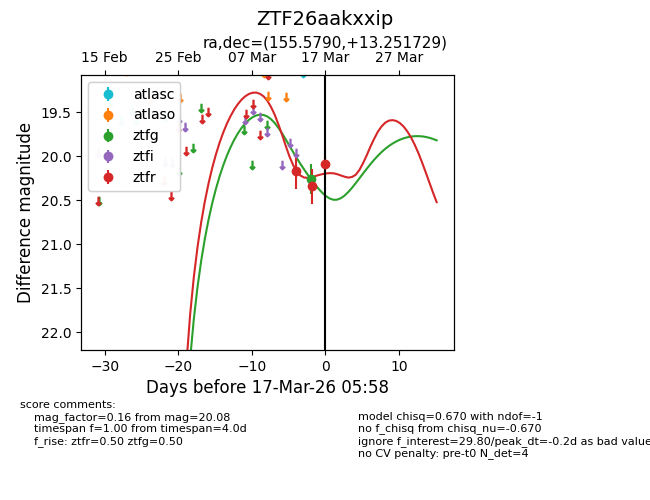
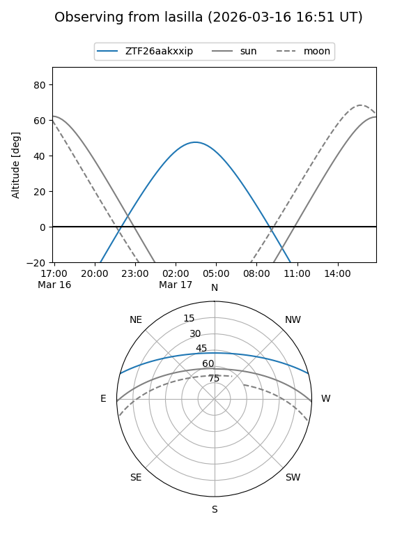
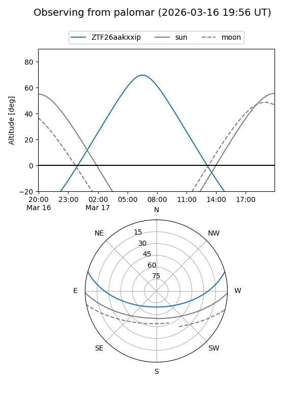
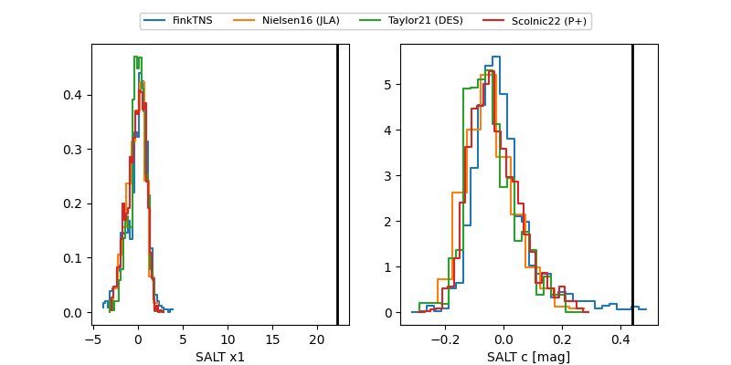

ZTF26aakxxip
Target ZTF26aakxxip at 2026-03-17 06:00
Aliases and brokers:
FINK: link
Lasair: link
ALeRCE: link
alt names
ZTF26aakxxip (ztf,fink_ztf)
Coordinates:
equatorial (ra, dec) = 155.5790,+13.25173
equatorial (HMS+DMS) = 10:22:18.95,+13:15:06.23
galactic (l, b) = (227.1278,+52.54338)
Flags:
Photometry:
last ztfg=20.26, ztfr=20.08
1 ztfg, 3 ztfr detections
Lightcurve

Visibility


Additional plots
